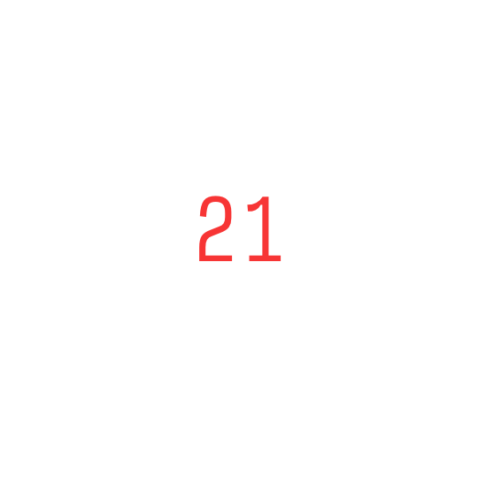
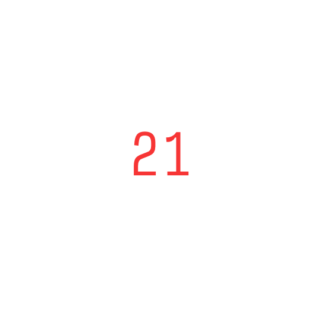
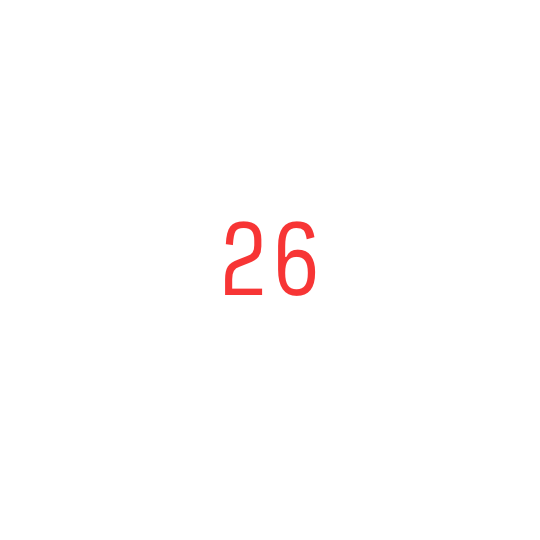
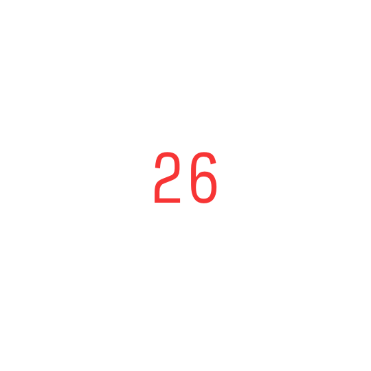

 



I'm part of the back-to-back NCAA champion Columbia fencing team, but running has never been part of my training regimen. That ends this summer. I'm trying to run every day (if even for a mile, ha)! Please do yell at me over any kind of messaging medium if I'm not keeping up with it. This is called "chain" because of the "Don't Break The Chain" thing that totally works for my addictive personality.
Something else ended this summer too -- my Tumblr. I was tired of the endless, mindless scrolling, and I'm generally trying to create more outside of what's given to me. I still love blogging though (read Joan Didion's "On Keeping a Notebook" for ref & res(onance)), so my little notes at the end are for that. Hit me up whenever! I'd love to talk more.
If you're on mobile, click the maps twice to get to the blog posts. Will fix soon.